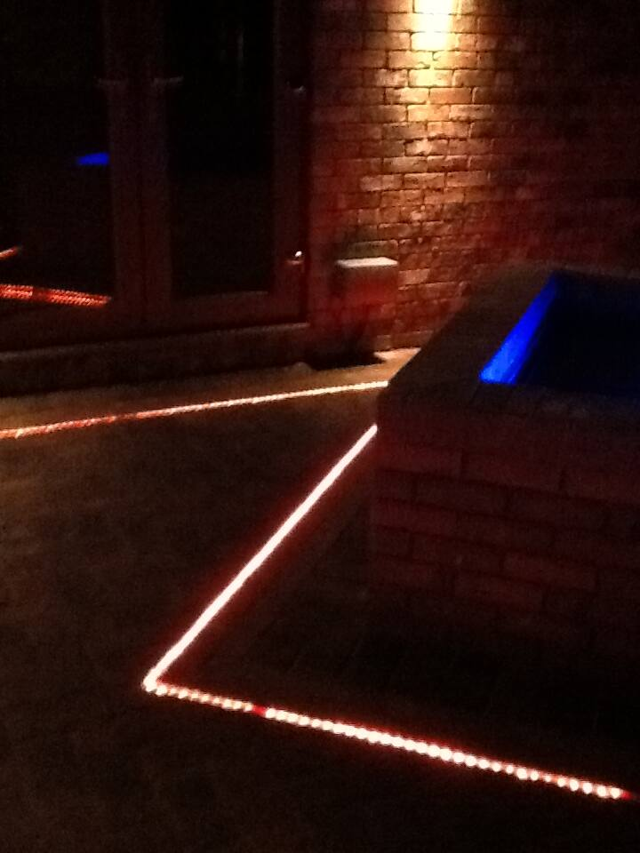

Cudworth Patio
TypeLandscaping
Photos9
AreaBarnsley & South Yorkshire

About the project
Completion of a small patio area using 60 mm brindle block paving combined with buff cobble blocks and large key kerbs to create planting area around a feature koi carp pond which is nearly 2 metres in depth, 1 metre below the patio notice the red line in the image.
Same patio depicting night image. The red illuminated lighting integrated into the paving combined with the wall lights looks very effective.